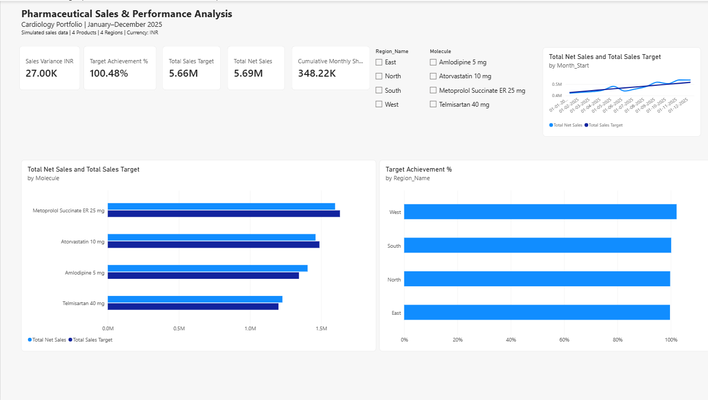

01 / OVERALL
Annual success can mask shortfalls
Annual achievement reached 100.48%, while the sum of product–region–month shortfalls was ₹3,48,218.45.
Pharmaceutical analytics · 2025 case study
Which cardiology products and regions missed sales targets — and where should the business investigate first? An Excel, SQL and Power BI portfolio analysis of a clearly labelled simulated dataset.
The dashboard
A Power BI dashboard with five KPI cards, monthly sales-versus-target trends, product comparisons, region achievement and product/region slicers.

Screenshot of the completed Power BI report with filters cleared. Select the image to view it full size. This is a static screenshot, not a publicly hosted interactive Power BI report.
The business problem
The simulated portfolio slightly exceeded its annual sales target. Yet aggregated results concealed individual products, regions and months that repeatedly fell short.
Decision focus: help a National Sales Head and Regional Sales Manager prioritise investigation using target achievement, monetary gaps and missed-month frequency.
Dataset at a glance
960 simulated transaction records and 192 unique monthly target records cover four cardiology medicines across North, South, East and West during 2025.
The dataset is educational and does not reflect actual company revenue, prescriptions, prescribing behaviour or market share.
Evidence from the analysis
Observed patterns below come exclusively from the simulated dataset; they are not evidence of real pharmaceutical performance.
Annual achievement reached 100.48%, while the sum of product–region–month shortfalls was ₹3,48,218.45.
Metoprolol achieved 97.91% and Atorvastatin achieved 98.16%; Amlodipine and Telmisartan exceeded their annual targets.
East achieved 99.68%, and North achieved 99.75%. West and South exceeded 100% annual achievement.
June recorded 94.13% achievement, a ₹27,488.95 monthly portfolio shortfall and −8.59% month-over-month growth.
Atorvastatin–East (₹36,651.25) and Metoprolol–West (₹36,545.70) had the largest highlighted cumulative monthly gaps. Metoprolol–South missed targets in 8 of 12 months — the most frequent misses among the reviewed combinations — with ₹33,781.49 in cumulative shortfalls.
What management could do
Eight missed months suggest a recurring pattern worth examining. This choice prioritises frequency, not the single largest financial gap.
These combinations have larger cumulative monthly shortfalls and merit separate investigation.
Track sales versus target, shortfall value and missed-month counts. Investigate June using additional operational data before inferring causes.
How the analysis was built
Structured product, region, sales and target data; documented field definitions; checked row counts, blanks, duplicates and arithmetic.
Used aggregates, joins, CTEs, conditional logic and LAG to compare products, regions, months and recurring gaps.
Built DAX measures, dimension-to-fact relationships, three charts and slicers; reconciled selected KPI totals with SQL.
Supporting evidence
Read the findings in-browser or open the source queries. Everything listed here uses simulated or original project material.
Five evidence-backed findings, investigative priorities and limitations.
Open PDF report ↗13 queries documenting validation, trends, target comparisons and shortfalls.
View SQL file ↗960 simulated sales transactions, 192 monthly targets, product and region master tables, and generation notes.
Download Excel dataset ↗Project scope, KPI definitions, data grain, quality checks and how to reproduce the analysis.
Read project README ↗